Mein Name istMy name is
Philipp Haemmerle
Phil Haemmerle
Ich erzähle Geschichten von Reisen und Abenteuern.
Ich spreche darüber, wie wichtig es ist, auf seinen Instinkt und sein Herz zu hören.
Und darüber, was geschehen kann, wenn man dem Unentdeckten in sich Raum gibt.
I tell stories of travel and adventure.
I talk about the importance of listening to your instinct and heart.
And about what can happen when you make room for what's still undiscovered in you.
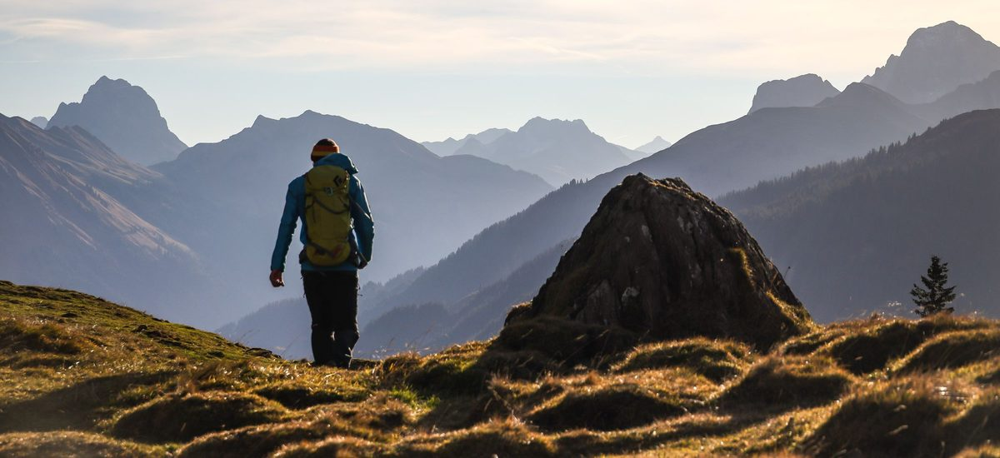
“I took the road less traveled by, and it has made all the difference.”
Robert Frost
Zwölf Jahre lang habe ich im Ausland gelebt und gearbeitet und bin dabei dem gefolgt, was mich bewegt und inspiriert hat.
For twelve years I lived and worked abroad, following what moved and inspired me.
Ein kurzer ÜberblickA quick overview
- Vier Jahre in den USA, in Hotels und als Skilehrer.
- Allein und ohne Unterstützung mit dem Fahrrad quer durch Nordamerika.
- Ein Jahr auf Reisen in Indien.
- Sechs Monate Skifahren in Japan.
- Vier Jahre als Guide und Fotograf für eines der besten Reiseunternehmen der Welt, mit Reisen rund um den Globus.
- Zwei Jahre in Kapstadt, wo ich das Segeln für mich entdeckt habe.
- Vier Atlantiküberquerungen und viele weitere Abenteuer mit dem Segelboot.
- 21 Tage im Dschungel ohne Essen.
- Four years in the USA, working in hotels and as a ski instructor.
- Crossing North America by bike, solo and unaided.
- A year of travels in India.
- Six months of skiing in Japan.
- Four years as a guide and photographer for one of the best travel companies in the world, leading trips around the globe.
- Two years in Cape Town, where I discovered sailing.
- Four Atlantic crossings and many other adventures by sailboat.
- 21 days in the jungle without food.
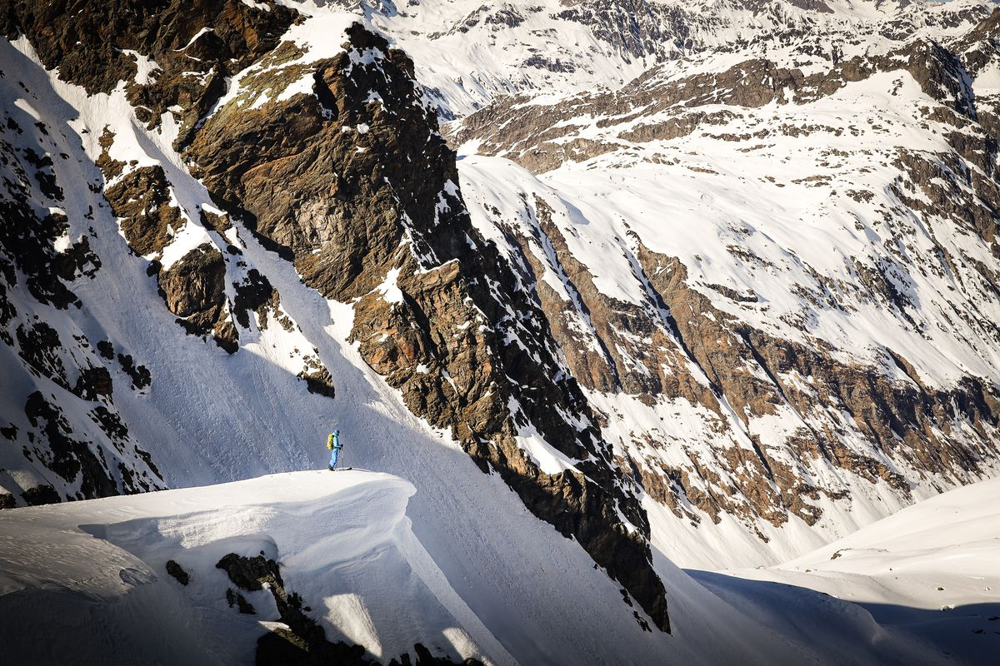
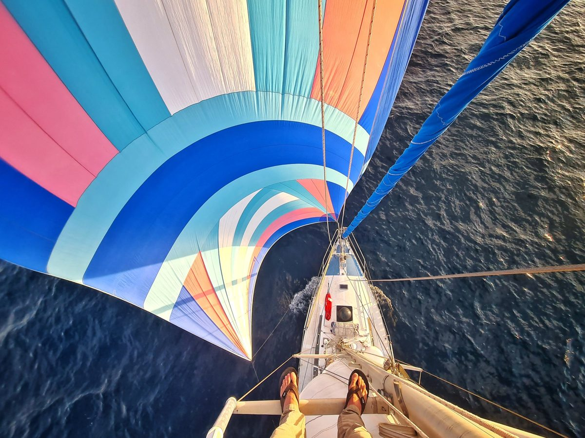
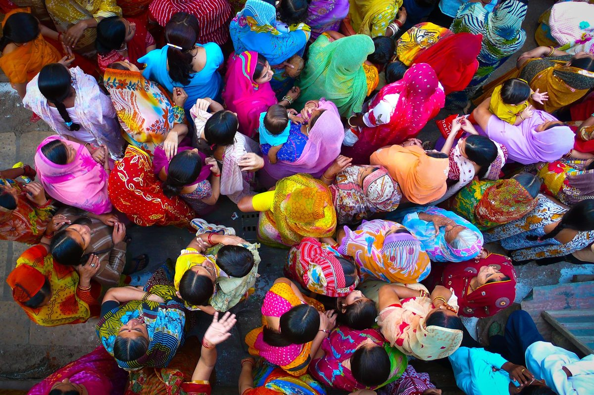
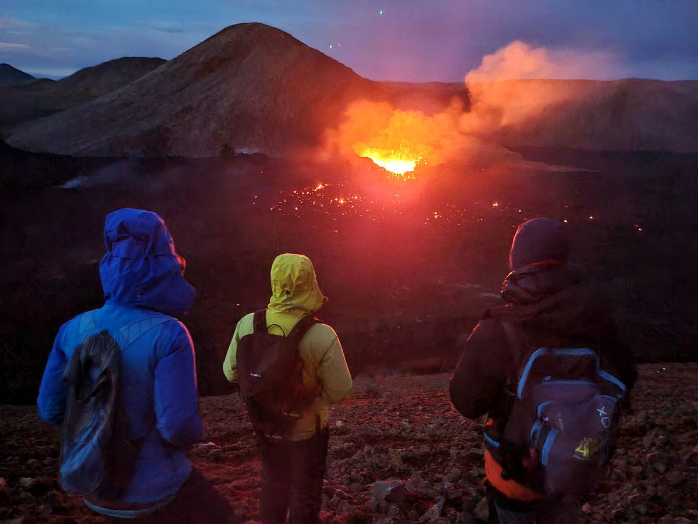
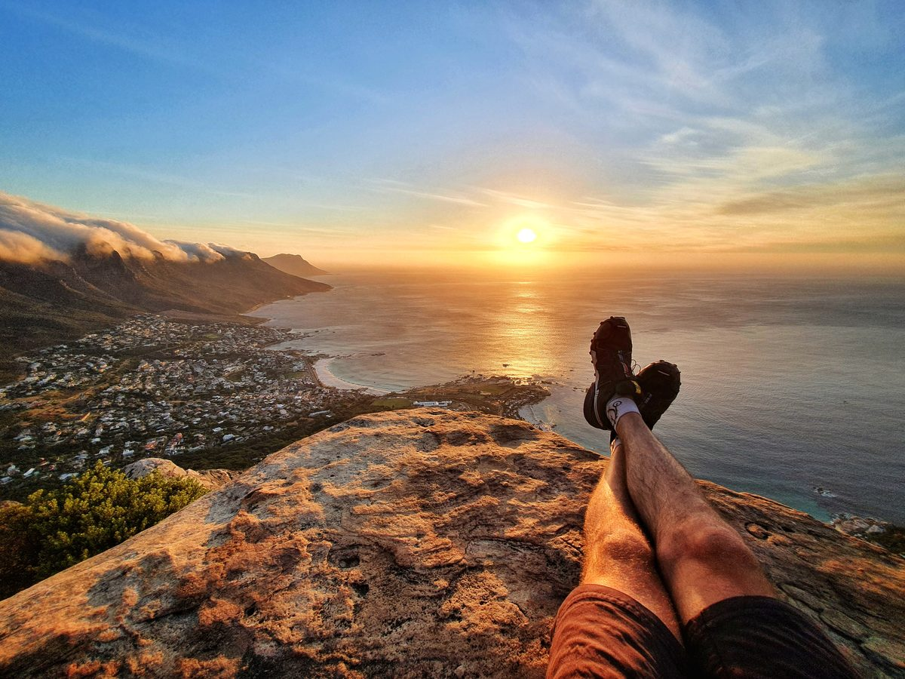
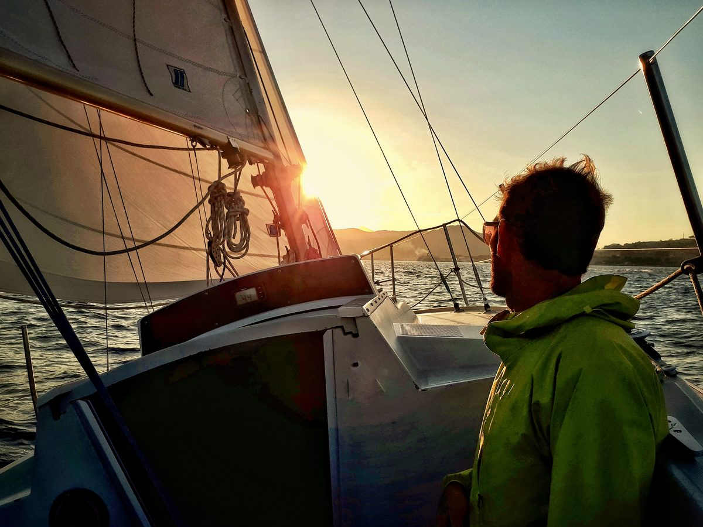
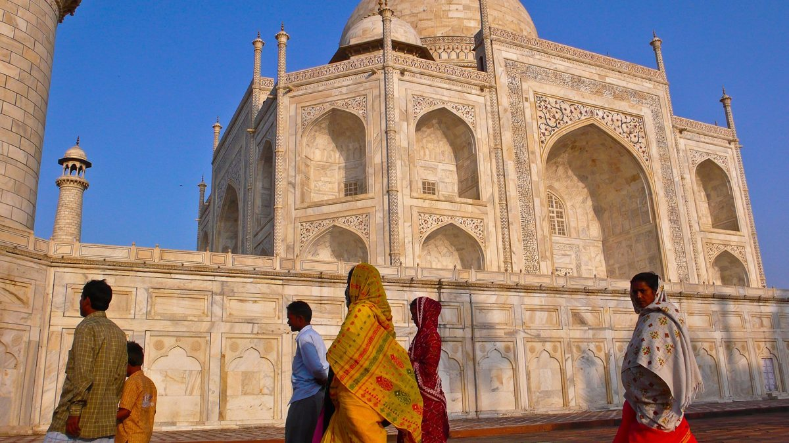
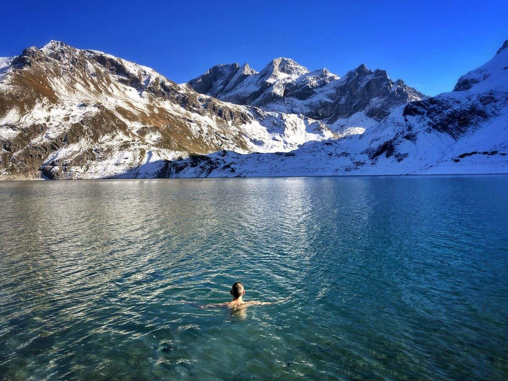
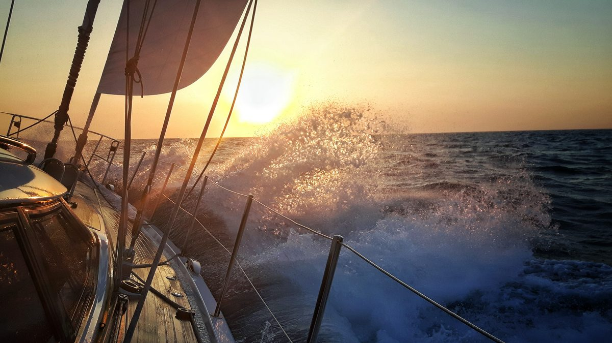
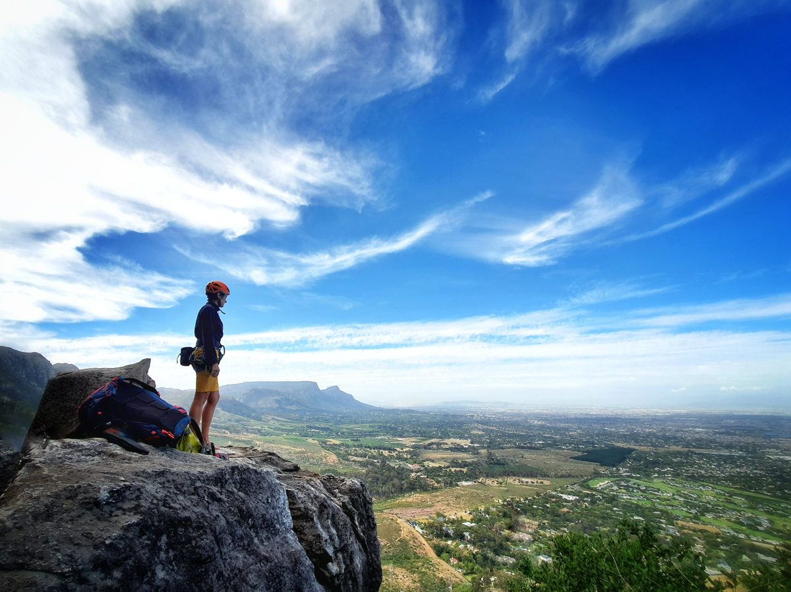
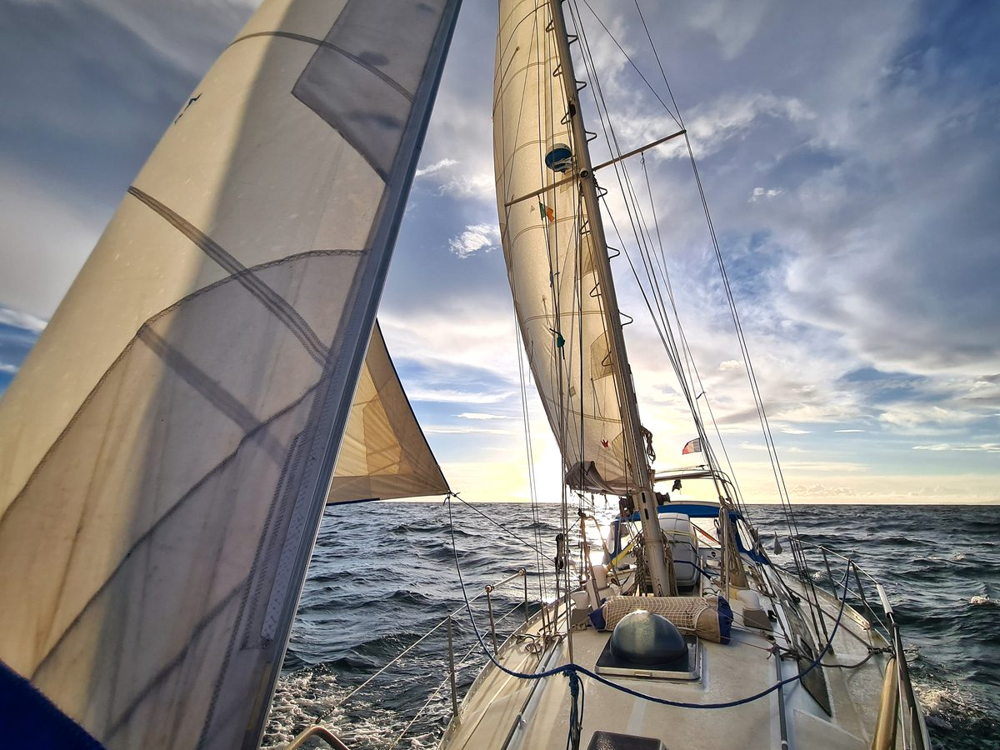
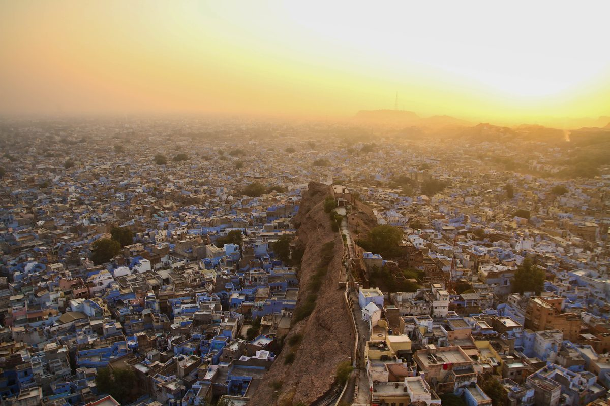
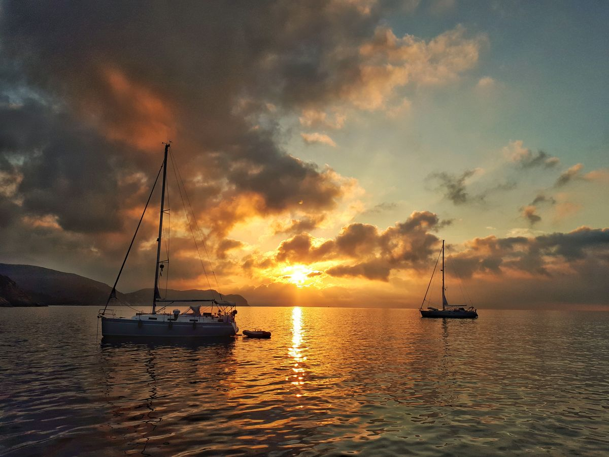
Was ich erlebt habe
What I've found
Wenn ich Entscheidungen aus dem heraus getroffen habe, was mich inspiriert und bewegt hat, ist dadurch so viel Raum für Möglichkeiten entstanden. Und wenn ich offen dafür war, sind sehr unerwartete und wunderbare Dinge passiert.
Das, wovor ich Angst hatte, ist meistens nicht eingetreten. Stattdessen ist etwas ganz anderes passiert. Es hat mich zu einigen der bedeutsamsten und wundervollsten Reisen und Erlebnisse meines Lebens geführt, und genau das möchte ich teilen.
When I've made a decision based on what inspired and moved me, it made so much room for possibility. And when I was open to it, very unexpected and amazing things happened.
The things I was afraid of usually didn't come to pass. Something else entirely happened instead. It has led to some of the most meaningful and wondrous journeys and experiences of my life, and that's what I want to share.
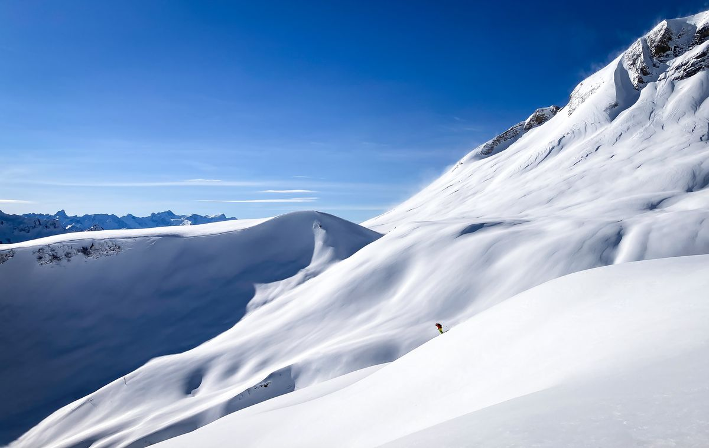
Was würdest du tun,
wenn du nur
noch ein Jahr zu leben hättest?
What would you do
if you only had a year to live?
Das Format
eines VortragsThe format
of a talk
Erst die Geschichten, dann deine Fragen
Stories first, then your questions
Ich beginne mit etwa fünfzehn Minuten Geschichten und Fotos von unterwegs. Dann gebe ich das Wort ab, und alle können mich fragen, was sie wollen. Die Fragen bestimmen, wohin das Gespräch geht und auf welche Geschichten und Erlebnisse ich tiefer eingehe. Weil die Fragen führen, landet der Vortrag immer bei dem, was das Publikum wissen möchte. Keine Vorlesung, keine Theorie. Ich erzähle nur von selbst Erlebtem. Kein Vortrag gleicht dem anderen.
Jeder Vortrag wird an das Publikum angepasst, von einer Schulklasse bis zu einem Team im Unternehmen. Ein Besuch dauert ein bis zwei Stunden, wobei sich zwei Stunden meist mehr lohnen. Auf Deutsch oder Englisch.
I start with about fifteen minutes of stories and photos from the road. Then I hand it over, and people can ask me anything. Their questions decide where the conversation goes and which stories and experiences I go into more deeply. Because the questions lead, the talk always lands on what the audience wants to know. There's no lecture and no theory. I only talk about what I've lived. No two talks are alike.
Every talk is adjusted to the audience, from a class of teenagers to a team at work. A visit can take from one to two hours, though two hours usually works better. In German or English.
Für Schulen
For schools
Junge Menschen wachsen in einem System auf, in dem Schule, Eltern und Gesellschaft oft beeinflussen, wie der richtige Weg aussieht. Ich komme als eine andere Stimme, mit neuen Ideen. Ich gebe keinen Weg vor. Ich lade junge Menschen ein, nach innen zu schauen und ihren eigenen zu finden. Ich wünsche mir, dass sie mit dem Gefühl nach Hause gehen, selbst herausfinden zu können, was sie inspiriert, was sie aufblühen lässt und wer sie in dieser Welt sein möchten.
Young people grow up in a system where school, parents and society often influence what the right path looks like. I come in as a different voice, with new ideas. I don't suggest a path. I invite young people to look inward and find their own. I hope they go home feeling they can find out for themselves what inspires them, what makes them flourish, and who they want to be in this world.
Für Teams und Unternehmen
For teams and companies
Jedes Publikum ist anders, deshalb richte ich mich nach dem Raum. Ein Vortrag kann leicht und unterhaltsam bleiben oder tief und philosophisch werden, und meistens wird es eine Mischung aus beidem. Wenn die Leute wissen möchten, wie eine Ozeanüberquerung ist oder wie man ein Leben unterwegs organisiert, gehen wir dorthin. Wenn die Fragen tiefer führen, etwa dazu, was es emotional braucht, ins Unbekannte zu springen, und wie man mit Angst umgeht, gehen wir dorthin. Mein Ziel ist ein lebendiges Gespräch mit dem Publikum.
Every audience is different, so I follow the room. A talk can stay light and entertaining or go deep and philosophical, and usually it turns out to be a mix of both. If people want to know what an ocean crossing is like or how to organise a life on the move, that's where we go. If the questions lead somewhere deeper, like what it takes emotionally to leap into the unknown and how to deal with fear, we go there. My goal is to have an engaging conversation with the audience.
Über PhilippAbout Phil
Segler, Skilehrer, Guide, Fotograf und Tausendsassa.
Sailor, ski instructor, guide, photographer and jack of all trades.
Ich bin ein Abenteurer der sanftmütigen, lebendigen Art. Ich will nicht gegen die Elemente oder gegen mich selbst kämpfen. Ich suche Harmonie und Inspiration in den Herausforderungen der Natur, des Reisens und des Lebens. Auf mein Herz und meinen Instinkt zu hören, hat mich in zahlreiche Länder und zu außergewöhnlichen Erfahrungen geführt.
I'm the gentle, lively kind of adventurer. I don't aim to be at war with the elements or with myself. I look for harmony and inspiration within the challenges of nature, of travel and of life. Listening to my heart and my instincts has taken me to many countries and to extraordinary experiences.
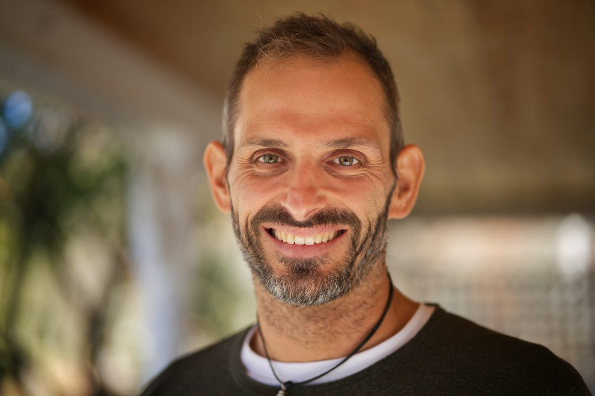
KontaktContact
Lust auf einen Besuch?
Want me to visit?
Wenn das nach etwas klingt, das zu deiner Schule oder deinem Team passt, freue ich mich, von dir zu hören. Auf Altersgruppe, Publikum und Zeitplan stelle ich mich gern ein.
If this sounds like something for your school or your team, I'd be glad to hear from you. I'm happy to fit around age group, audience and schedule.
Feedback
Wie fandest du es?
What did you think?
Warst du bei einem Vortrag dabei? Ich freue mich über ein paar Zeilen dazu, was dir gefallen hat oder was hängen geblieben ist.
Were you at one of my talks? I'd love a few lines on what you liked or what stayed with you.